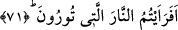
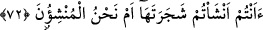
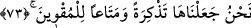

ekin eken kimse gibi. O, ilk önce tarlasını hazırlar sonra tohumunu eker. Yağmuru kimin
yağdırdığını bilmez. Yağmur yağınca onun yerine de yağar.
Sonra iyi bil ki, ruh yağmurla iner. Onun her bir canlının her bir büyüme ve gelişme
dönemi için belirlenmiş uygun bir hâli vardır. Rahimde cenînin yaratılışı tamamlanınca
ona Allah tarafından ruh üflenir. Aslında bu rûhun ortaya çıkıp belirlenmesinden
ibârettir. Ancak akıl onu idrâk etmekten âciz olduğu için bu ortaya çıkarılma olayına
nefh denilmiştir. Peygamber Efendimiz (s.a.) yağmur yağdığında mübarek başlarını açar
ve “Bunun, Rabbiyle olan ahdi yenidir, tazedir”[223] buyururdu. Böyle olunca, hangi
ruh olursa olsun o mutlak mânâda hayata sebeptir. Bunun için, önceden yerini
hazırlamak suretiyle Hak tarafından gelecek tecellîleri karşılamak gerekir.
Peygamberimiz (s.a.)’in yağmur yağdığında mübarek başını açmak suretiyle yağmur
yağacak yeri hazırladığı gibi. Çünkü, yağmur yüksekten gelerek insanın en yüksek yerine
düşer ki o da başdır.
71. Söyleyin şimdi bana, tutuşturmakta olduğunuz ateşi.
Yâni, birbirine sürtüp tutuşturduğunuz ve zinâd denilen ağaçtan çıkardığınız ateşi.
Araplar iki parça odunu birbirine sürterek ateş elde ederlerdi. Üsttekine zend, alttakine
zende derlerdi. Zira onları erkek deve ile tava gelmiş dişi deveye benzetiyorlardı.
72. Onun ağacını siz mi yarattınız, yoksa yaratan biz miyiz?
Asıl maddesi zinâd olan “onun” ateşin “ağacını siz mi yarattınız.” Yâsin sûresinin
80. âyetinde geçtiği gibi o ağaç Merh ve Afar denilen ağaçtır. “Yoksa” onu kudretimizle
“yaratan biz miyiz?”
73. Biz onu bir ibret ve çölden gelip geçenlerin istifâdesi için yarattık.
Bu cümle, o ağacın faydalarını açıklayan başlangıç cümlesidir. “Biz onu bir ibret”
yâni zinâd ateşini cehennem ateşini hatırlatması “için yarattık.” Şöyle ki, biz onların
geçim sebeplerini o ateşe bağladık ki, ona bakıp tehdid edildikleri cehennem ateşini
hatırlasınlar. Yahut biz onu bir öğüt, hatırlatma ve cehennem ateşine bir örnek olarak